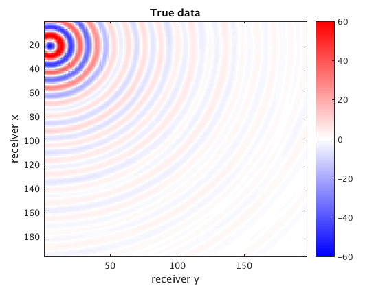
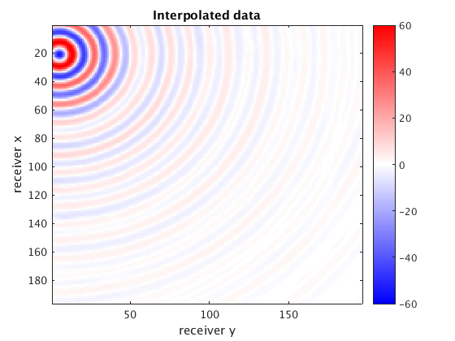
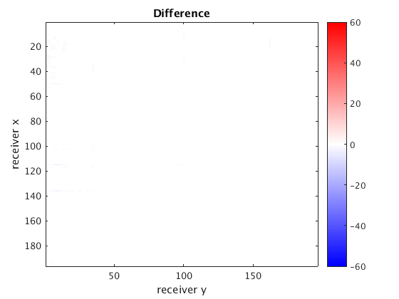
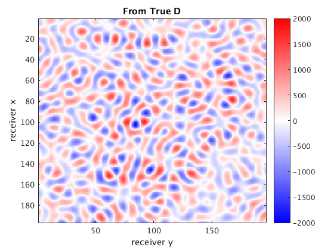
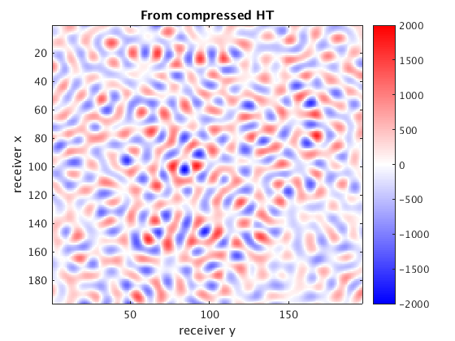
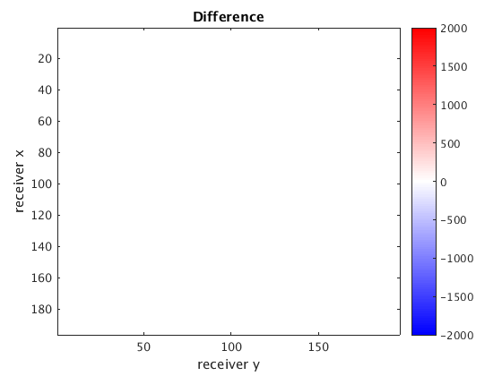
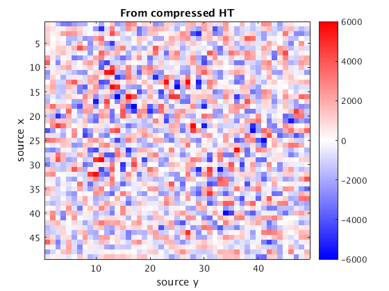
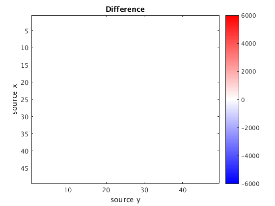

Contents
baseDir = pwd;
baseDir = [baseDir(1:end-3)];
resultsDir = [baseDir 'results/'];
dataDir = [baseDir 'data/'];
load([resultsDir 'results.mat']);
load([dataDir '/BG_3Hz.mat']);
nsrcx = size(D,3);
nrecx = size(D,1);
nsrcy = size(D,4);
nrecy = size(D,2);
nrecs = nrecx * nrecy;
nsrcs = nsrcx * nsrcy;
Compression in fully sampled scenarios
D = permute(D,[1 3 2 4]);
D1 = reshape(dimTree1.full(x1), [nrecx, nsrcx, nrecy, nsrcy]);
diff1 = D1 - D;
snr1 = SNR(D1,D);
disp(['SNR of entire compressed volume ' num2str(snr1) 'dB']);
figure;
imagesc(reshape(real(shot1),[nrecx, nrecy]));colormap seiscol; caxis([-60 60]); colorbar
xlabel('receiver y'); ylabel('receiver x'); title('Compressed data')
figure;
imagesc(real(squeeze(D(:,6,:,2)))); colormap seiscol; caxis([-60 60]); colorbar
xlabel('receiver y'); ylabel('receiver x'); title('True data')
figure;
imagesc(real(squeeze(diff1(:,6,:,2)))); colormap seiscol; caxis([-60 60]); colorbar
xlabel('receiver y'); ylabel('receiver x'); title('Difference')
SNR of entire compressed volume 62.628dB


Interpolation in missing entries scenarios
D2 = reshape(dimTree2.full(x2),[nrecx, nsrcx, nrecy, nsrcy]);
diff2 = D2 - D;
snr2 = SNR(D2,D);
disp(['SNR of entire interpolated volume ' num2str(snr2) 'dB']);
figure;
imagesc(reshape(real(shot2),[nrecx, nrecy]));colormap seiscol; caxis([-60 60]); colorbar
xlabel('receiver y'); ylabel('receiver x'); title('Interpolated data')
figure;
imagesc(real(squeeze(D(:,6,:,2)))); colormap seiscol; caxis([-60 60]); colorbar
xlabel('receiver y'); ylabel('receiver x'); title('True data')
figure;
imagesc(real(squeeze(diff2(:,6,:,2)))); colormap seiscol; caxis([-60 60]); colorbar
xlabel('receiver y'); ylabel('receiver x'); title('Difference')
SNR of entire interpolated volume 34.8202dB
 
Compute D*w if you provide the probing vector
figure;
imagesc(reshape(real(d1), nrecx, nrecy)); colormap seiscol;caxis([-2 2]*1e3); colorbar
xlabel('receiver y'); ylabel('receiver x'); title('From True D')
figure;
imagesc(reshape(real(d3), nrecx, nrecy)); colormap seiscol;caxis([-2 2]*1e3); colorbar
xlabel('receiver y'); ylabel('receiver x'); title('From compressed HT')
figure;
imagesc(reshape(real(d3 - d1), nrecx, nrecy)); colormap seiscol;caxis([-2 2]*1e3); colorbar
xlabel('receiver y'); ylabel('receiver x'); title('Difference')
  
Compute D^H*w if you provide the probing vector
figure;
imagesc(reshape(real(d2), nsrcx, nsrcy)); colormap seiscol;caxis([-6 6]*1e3); colorbar
xlabel('source y'); ylabel('source x'); title('From True D')
figure;
imagesc(reshape(real(d2), nsrcx, nsrcy)); colormap seiscol;caxis([-6 6]*1e3); colorbar
xlabel('source y'); ylabel('source x'); title('From compressed HT')
figure;
imagesc(reshape(real(d4 - d2), nsrcx, nsrcy)); colormap seiscol;caxis([-6 6]*1e3); colorbar
xlabel('source y'); ylabel('source x'); title('Difference')

 